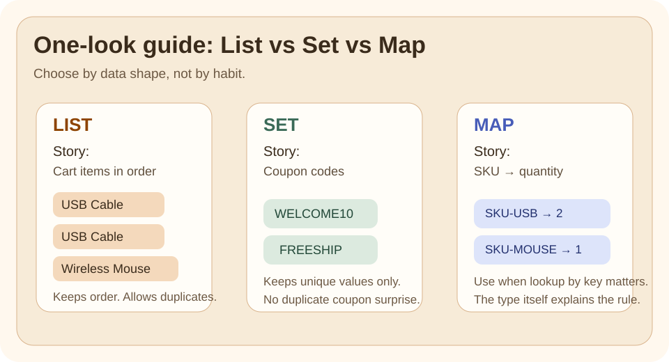

Why This Exists
Java bugs often come from choosing the wrong data shape, not from writing the wrong syntax.
If the business rule is "keep order", "keep values unique", or "look up by key", the collection type should express that rule directly.
The Pain Before It
Imagine one small commerce flow:
- cart items must keep order and allow duplicates
- coupon codes should not repeat
- product quantities should be fetched by SKU
If all three are stored in List, the code compiles, but the intent is wrong from the start.
Java Creator Mindset
Collections are not just containers. They are a way to make business rules visible in code:
Listsays order mattersSetsays uniqueness mattersMapsays lookup by key matters
That makes code easier to read before anyone studies the implementation details.
How You Might Invent It
Start with three questions:
- Do I care about order?
- Do I care about uniqueness?
- Do I need lookup by key?
Those questions naturally lead to List, Set, or Map.

Naive Attempt
Use List for everything because it is familiar and easy to print.
That looks harmless at first:
- one collection type to remember
- simple iteration
- simple examples
Why It Breaks
The same List-everywhere choice causes three different problems:
- coupon codes can repeat even when the business rule says they should be unique
- quantity lookup becomes repeated scanning instead of direct key access
- the reader cannot tell the rule from the type alone
The bug is not only performance. It is loss of intent.
Final Java Solution
Match the collection to the data rule:
- use
List<String>for cart lines - use
Set<String>for coupon codes - use
Map<String, Integer>for quantities by SKU
That is the shape used in the runnable example.
Code
Run It
Run the example and compare cart items, coupon codes, and product quantities.
Expected Result
- cart items keep duplicates and order
- coupon codes stay unique
- product quantities can be looked up by SKU
Walkthrough
The Java file uses three small methods:
sampleCartItems()returns aListbecause duplicate items are valid in a cartsampleCouponCodes()returns aSetbecause duplicates would be a business bugsampleQuantitiesBySku()returns aMapbecause the main question is "what is the quantity for this SKU?"
This is the main lesson: the type answers the first design question before any loop starts.
Mental Model
Think in terms of the question the code needs to answer:
| Question | Best fit |
|---|---|
| "What came first, second, third?" | List |
| "Have we already seen this value?" | Set |
| "What value belongs to this key?" | Map |
If you cannot state the question clearly, you will usually choose the wrong collection.
Mistakes
- using
Listwhen uniqueness is the real requirement - using
Setand then being surprised that index-based access does not exist - using
Mapwhen there is no real key-based lookup need - choosing by habit instead of by business rule
Tradeoffs
| Collection | Strength | Cost |
|---|---|---|
List |
keeps order and duplicates naturally | lookup by value is often repeated scanning |
Set |
prevents duplicates clearly | no positional access; ordering depends on implementation |
Map |
direct lookup by key | you must define a meaningful key |
For interview answers, say the correctness rule first and the performance implication second.
Use / Avoid
Use It When
- you want the collection type to document the data rule
- order, uniqueness, or lookup is the main decision
- you want simpler downstream code
Avoid It When
- you are picking a collection only because it is the one you remember best
- you are discussing implementation classes before you understand the data shape
Summary
List,Set, andMapsolve different data-shape problems- the right choice makes correctness clearer before performance is discussed
- the fastest way to choose is to ask: order, uniqueness, or key lookup?